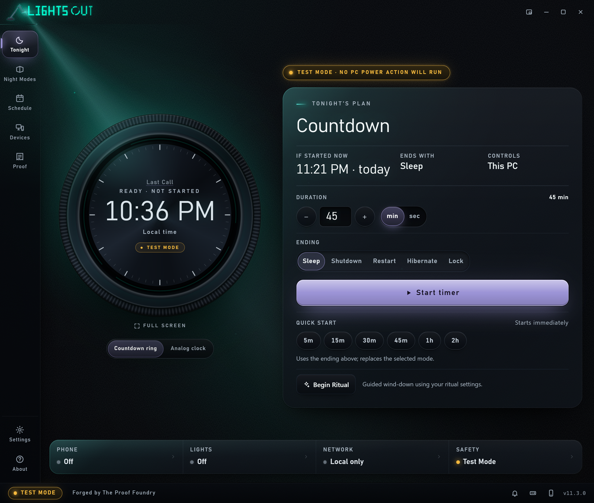
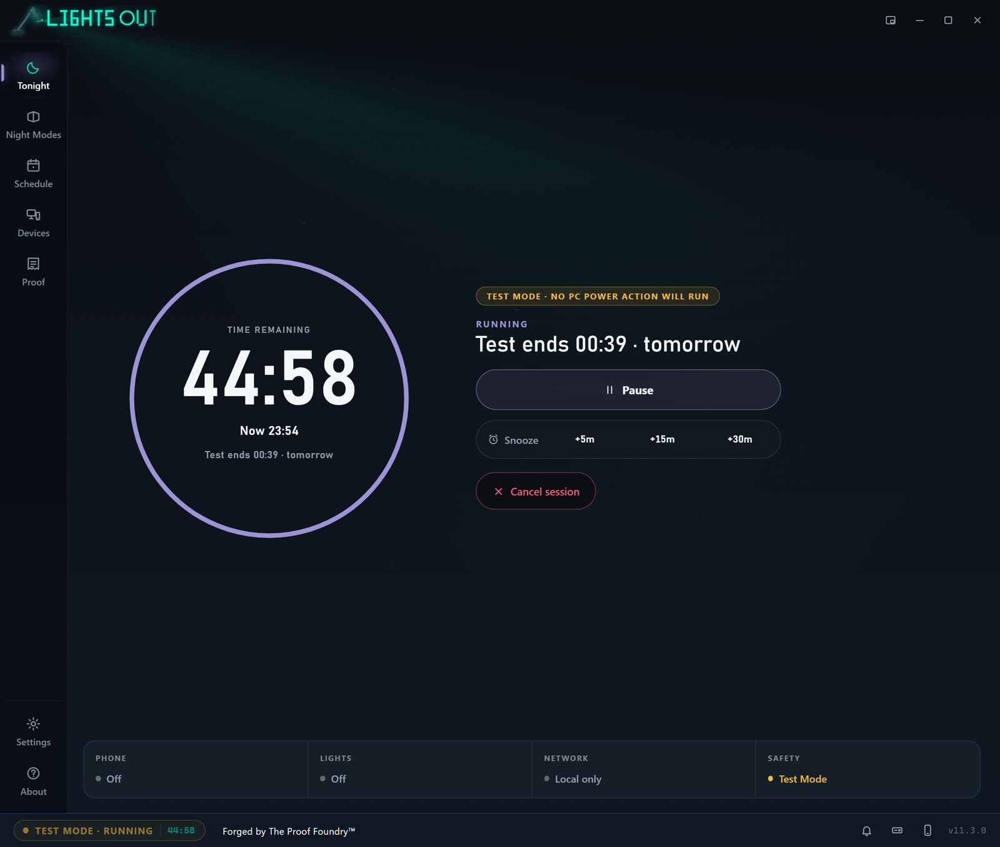
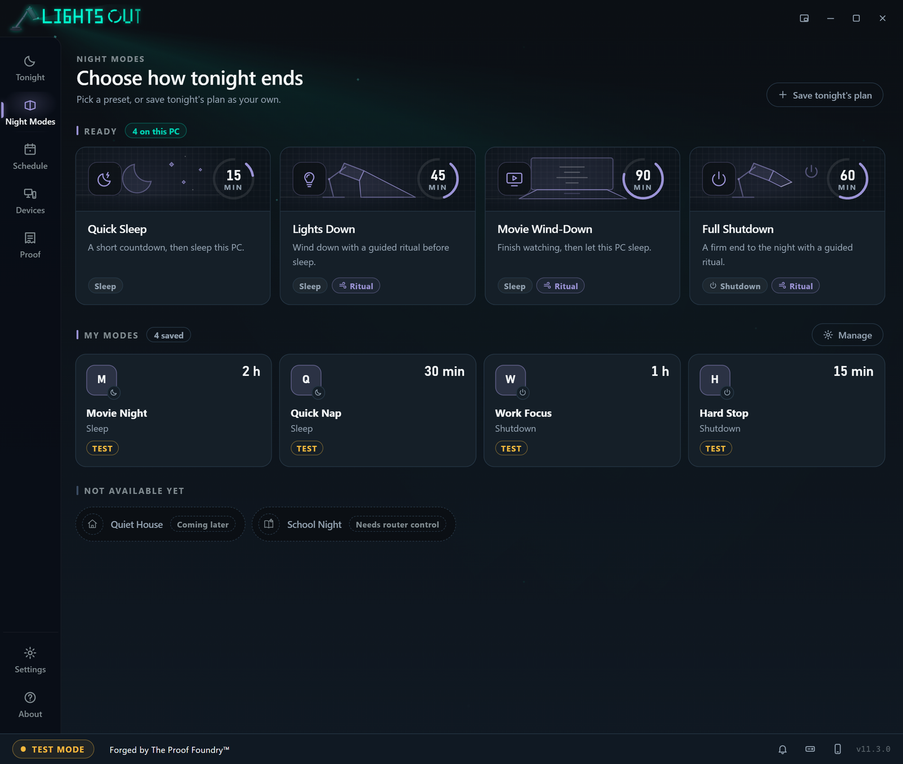
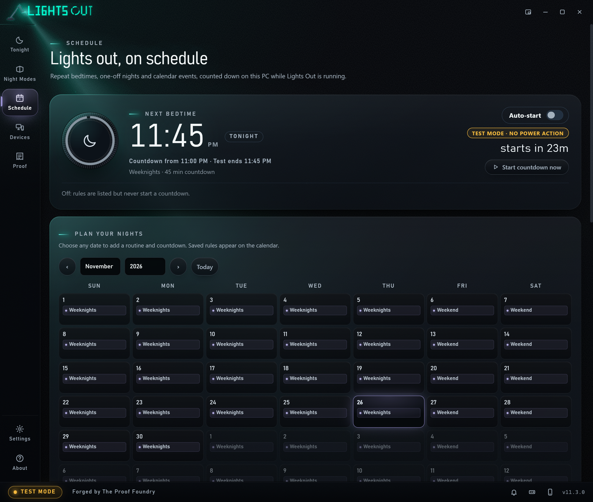
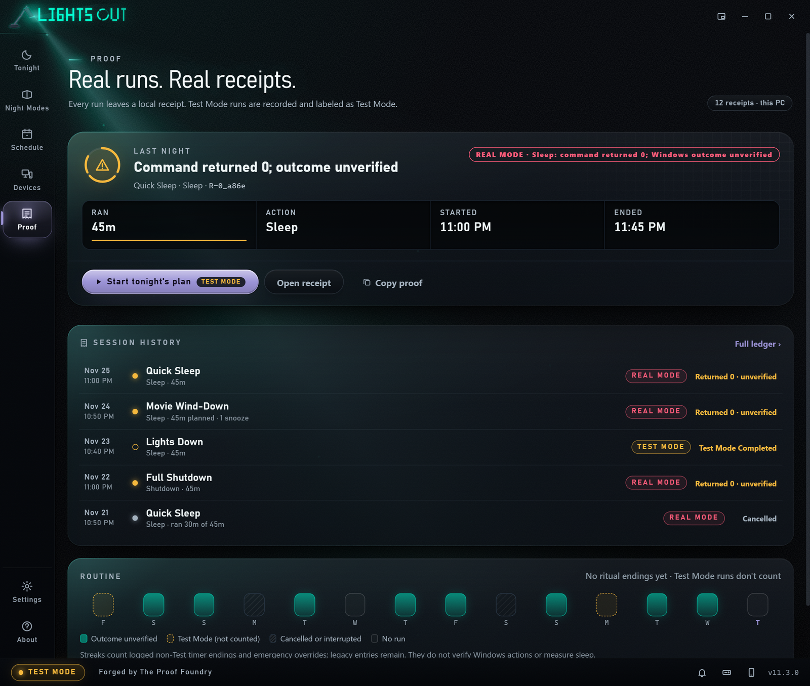

Night Modes & rituals
Ready-made evenings and your own saved modes, with a guided ritual that walks you through the wind-down.
Lights Out runs your whole wind-down: guided rituals and Night Modes, schedules that start on their own, lights that dim with you, distractions switched off — then your PC sleeps or shuts down on time. In the morning, First Light brings the lights back up.




The countdown is just the last step. Lights Out ties the whole evening together — your PC, your lights, your distractions, the people keeping you honest, and the morning after.
Ready-made evenings and your own saved modes, with a guided ritual that walks you through the wind-down.
Weekly, monthly or one-off bedtime rules, calendar feeds, and an Autopilot that learns your usual bedtime.
WiZ, Philips Hue or a webhook: dim and warm with the countdown and switch off at the end — or a Room Hourglass that drains as time runs out.
A sunrise alarm for the morning after: it wakes your PC on schedule and brings the screen and lights up gently.
Block distracting sites at wind-down, optionally cut internet to chosen devices with Wi-Fi Guard, and pause what is playing.
Let a partner know when you start, cancel or override — over Discord, Slack or any webhook you choose.
Start, pause, snooze or cancel from your phone, and look after the other Lights Out PCs in your home over your own network.
Every run leaves a receipt. A 14-night routine view and streaks show how bedtime is really going.
Lights Out turns "five more minutes" into a plan you set once — and a gentle, visible countdown you can always stop.
Choose a duration and an ending — Sleep, Shutdown, Restart, Hibernate or Lock — or one of the ready Night Modes like Quick Sleep or Movie Wind-Down.
A warning before the end, an optional guided ritual, and opt-in extras: dim smart lights, pause what's playing, block distracting sites.
A short Last Light finale, a check for unsaved work, then the ending you chose. You can cancel right up until the power request is sent to Windows.
The Tonight screen shows the time, what will happen and when — in plain words. While a run is going, the ring counts down and pause, snooze and cancel are one click away.
Start from four presets — Quick Sleep, Lights Down, Movie Wind-Down and Full Shutdown — or save tonight's plan as one of your own modes and reuse it with a click.
Set weekly, monthly or one-off bedtime rules, or let Autopilot learn your usual bedtime. Scheduled starts never force a shutdown, and if your PC slept through bedtime, nothing fires when it wakes.
Every run leaves a local receipt: when it started, every snooze, how it ended. Lights Out records what it asked Windows to do — and never claims the PC really powered off when it can't know.

Every safety rule below is backed by automated tests in the release that ships it.
Rehearse a run end to end: the power action, lights, Night Light, closing apps, media, Wi-Fi Guard, site blocking and partner messages are all skipped — and the app says so.
Ctrl+Shift+X, the tray, the window, your phone — every cancel works through the final Last Light seconds, until the power request is sent to Windows.
If your PC sleeps through bedtime, the run is recorded as missed. It never shuts down seconds after you open the laptop in the morning.
Before a real ending, Lights Out looks for "Save changes?" dialogs and gives you time to save. If it can't check, it blocks the action rather than guess.
Force shutdown is never the default. Scheduled, tray, phone and calendar starts never force, and a phone can only ever start a shutdown, sleep or restart.
Sleep and Hibernate run only if Windows offers them on this PC; otherwise nothing runs. Receipts say "Windows outcome unverified" instead of pretending.
No account, no cloud, no analytics. Settings and receipts live in your Windows profile, and saved passwords for integrations are encrypted with Windows' own protection.
Free for Windows 10 and 11 (64-bit). Install it, or run the portable copy — both are the same app.
Adds Lights Out to the Start menu and Add/Remove Programs. Uninstalling removes exactly what it installed.
Download installerListed in SHA256SUMS.txt on the release pageExtract anywhere and run Lights Out.exe — nothing to install. This is also the format in-app updates download.
Listed in SHA256SUMS.txt on the release pageCheck your download. In PowerShell, compare the result with the SHA-256 above or with SHA256SUMS.txt on the release page.
Get-FileHash .\Lights-Out-Setup-v11.3.2.exe -Algorithm SHA256
Why Windows may ask first. Lights Out isn't code-signed yet, so SmartScreen can show "Windows protected your PC". Check the hash, then choose More info → Run anyway.
Wi-Fi Guard is opt-in and experimental. A standalone Android app is in testing and is not part of this download.
No. The countdown is the last step of a whole evening: Night Modes and guided rituals, schedules and Autopilot, smart lights that dim with you, site blocking and an optional Wi-Fi Guard, accountability partners, a First Light sunrise alarm in the morning, phone control and a receipt for every run. Everything beyond the timer is opt-in.
Only if you set up a schedule or Autopilot yourself. Lights Out opens idle, Run at login starts minimized and idle, and scheduled starts never force a shutdown. A countdown is always visible, and Ctrl+Shift+X cancels from anywhere until the power request is sent.
Then the night is recorded as missed. If the deadline passed more than 5 minutes ago when the PC wakes, nothing powers off — you get a notification and a receipt instead.
Turn on Test Mode. A Test Mode run goes through the whole evening on screen but skips the power action and every automatic effect, and its receipt is labelled Test Mode.
No account, ever. The installer installs for your Windows user. Some optional extras, like turning this PC's Wi-Fi adapter off, need Windows permission to change network settings.
No telemetry and no analytics. Until you set up an integration, the only connection is the update check described above, which reads a public release record and sends no personal data.
Use Add/Remove Programs (installer) or delete the folder (portable). The uninstaller removes exactly the files it installed, and its own login item and scheduled tasks.